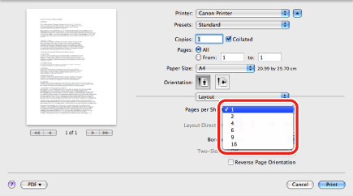
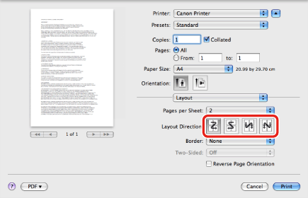
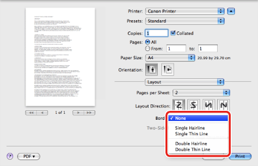

Printing Multiple Pages on One Sheet
Multiple pages of the original can be printed on one sheet of paper by reducing the print size.
1.
From the [File] menu of the application software, select [Print].
The [Print] dialog box is displayed.
2.
The [Layout] preferences pane is displayed.
3.
Select the number of pages you want to print onto one sheet of paper from [Pages per Sheet].

4.
Select the page layout direction from [Layout Direction].

5.
To add a border, select the line type from [Border].

6.
Click [Print] in the [Print] dialog box.